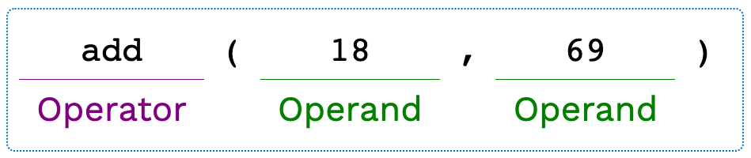
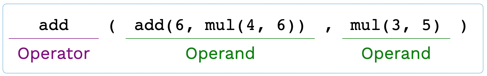

Nested call expressions
Anatomy of a call expression
Before we dive into more complex call expressions, let's first understand a simple call expression more deeply. Remember, a call expression is any expression that calls a function, like pow(2, 100). The diagram below is for a call expression using the add function.
Here's how Python evaluates that call expression:
It first evaluates the operator. In this case, it sees that it's a function named
add, checks to see if anaddfunction is accessible in the current environment, and remembers whatever function definition it finds.It then evaluates the operands, in order. Above, they are both simple numbers, so it first evaluates the number 18 and then the number 69. Since those are simple number values and not expressions themselves, it doesn't have to do much work here!
Finally, it applies the operator (a function) to the operands (values), according to the function definition. The above expression calls the add function on the values 18 and 69 and returns whatever is computed by that function.
TODO: Quiz
Nested call expressions
Now let's look at a nested call expression: a call expression where the expressions themselves are also call expressions.

If we were asked to evaluate that as a human, logically, we'd realize that we can't compute the outer add function until we know the operands, and we can't even compute that inner add function until we know the result of the first mul operation.
So we might start from the inside out, computing like this:
add(add(6, mul(4, 6)), mul(3, 5))
add(add(6, 24 ), mul(3, 5))
add(add(6, 24 ), mul(3, 5))
add( 30 , mul(3, 5))
add( 30 , mul(3, 5))
add( 30 , 15 )
add( 30 , 15 )
45The computer takes a similar approach, creating an expression tree. It applies the same 3-step process from before to each call expression in the tree, starting with the bottom-most expressions, until it's able to finally do the final computation.
 📺 Here's a video walkthrough of that call expression tree which shows the order of the calls and return values.
📺 Here's a video walkthrough of that call expression tree which shows the order of the calls and return values.
TODO: Quiz
Exercise: Operator expressions
The following expressions are written entirely with arithmetic operators. Rewrite them using the following functions from the operator module: add, sub, mul, truediv, floordiv, and mod. You may find this table that maps operators to functions particularly helpful.
30 + 230 - 230 * 230 / 230 // 230 % 230 + (2 * 4)3 * (10 - 2)(3 ** (365/52)) - 1(25 // 4) - (25 / 4)
from operator import add, sub, mul, truediv, floordiv, mod
# After adding a call expression, run code to see if its correct
add(30, 2)